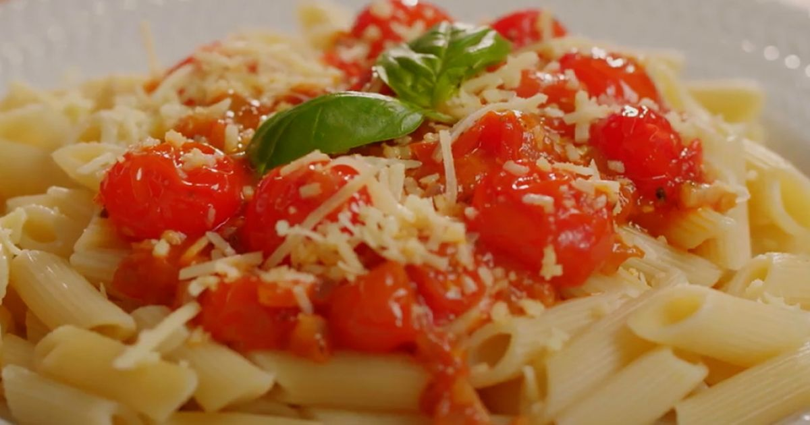

Receita do Dia

Macarrão Cremoso com Tomate
Ingredientes
- Macarrão 250g
- Tomates picados
- Creme de leite
- Queijo ralado
- Alho e cebola
Modo de preparo
- Cozinhe o macarrão em água e sal.
- Refogue o alho e a cebola até dourar.
- Adicione os tomates e deixe cozinhar por 5 minutos.
- Misture o creme de leite e o macarrão.
- Finalize com queijo ralado e sirva quente.
Nota do chef: Escolha tomates maduros para um sabor mais intenso.